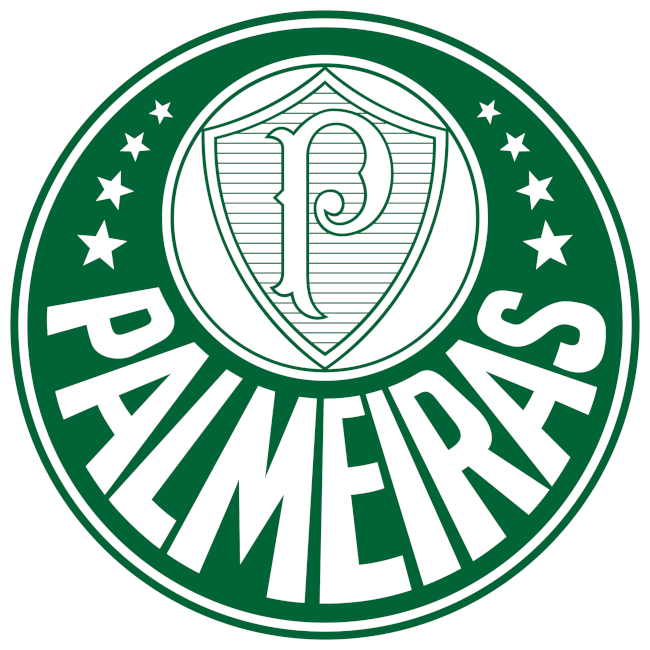

S.E Palmeiras 💚
Esse Site irá Retratar um pouco sobre o Clube Palmeiras
O Palmeiras é um Clube de futebol fundado em 26 de agosto de 1914 que possui uma tragetória imensac dentro do mundo do futebol
Clique Aqui para acessar o site oficial do clube ©
Diretoria
Atualmente o palmeiras tem como Presidente Leila Mejdalani Pereira A primeira Mulher Presidente desse clube
A mesma támbem é presidente do patrocinador master do palmeiras, a Crefisa
Clique Aqui para visualizar a lista de Presidentes que já passaram pelo palmeiras
História do Palestra Italia
O Palmeiras se chamava Palestra Itália quando foi fundado por imigrantes italianos poém passou a correr risco, incluindo as suas instalações no Parque Antárctica
que eram consideradas da mais alta tecnologia. Logo, tiveram que mudar seu nome e escudo para não ter sua imagem associada aos adversários do Brasil na Segunda Guerra Mundial.
Escudos Do Palmeiras

Esse é o atual escudo do palmeiras
O Palmeiras já possuiu outros escudos Clique Aqui Para vê-los
Navegar